Note
Click here to download the full example code
Workflow Outline
TL; DR conda install fitgrid and jupyter into a fresh conda
virtual environment (shown here). Download this document as Jupyter notebook
and run it. Read the notes, explore the output. Prerequisites: a
working knowledge of conda and virtual environments, regression modeling
with formulas like \(\mathsf{\sim ~ 1 + a + b + a:b}\) in Python or R,
and a bit of general purpose Python and pandas.
With multichannel digital recordings in hand, the basic fitgrid modeling workflow is four steps:
Prepare a 2-D vertical stack of fixed-length epochs as pandas.DataFrame. Rows = observations, indexed for epoch and time. Columns = data channels (numeric) and model predictor variables (numeric, string, boolean). See Epochs data format for details.
Load the data into a
fitgridEpochsobject for modeling.Specify and fit ordinary least squares or linear mixed-effects model formula to populate the
FitGrid[times, channels]object with the fit results. For OLS models use the patsy formula syntax which works like lm formulas in R. For mixed-effects models use the lme4::lmer R formula syntax.Query and slice the
FitGrid[times, channels]to fetch tidy time x channel dataframes of model fit results: coefficient estimates, residual error, model diagnostics, etc. for visualization and analysis.
1. Prepare epochs data
fitgrid assumes you are modeling epochs, i.e., fixed-length
segments of typically multi-channel digital data, time stamped, and
collected in a tidy pandas.DataFrame (see
Epochs data format for details).
Here is a small complete simulated data set with four epochs and three time points per epoch. As required by the format specification, the epoch_id indices are unique and the time indices are all the same within each epoch. There are two predictor variable columns (categorical, continuous) and four data channel
import fitgrid as fg
# fitgrid's built-in epoch data simulator
epochs_df = fg.generate(
n_epochs=2, # number of epochs per category level
n_samples=3, # number of time stamps per epoch
n_categories=2, # number of category levels
n_channels=4, # number of data channels
seed=1,
return_type="dataframe",
)
# convert the epoch and time stamp columns to a pandas.MultiIndex
epochs_df = epochs_df.set_index(["epoch_id", "time"])
epochs_df # display
A real epochs data set is typically much larger but the format is the same
as illustrated here with sample EEG data that fitgrid downloads from
Zenodo.
The EEG recording has already been snipped into into 1.5 second segments and time stamped with the stimulus events at time = 0. The experimental predictor variable data columns have been added in alignment with the individual epochs.
import pandas as pd
from fitgrid import DATA_DIR, sample_data
# download the epochs data and read into a pd.DataFrame
sample_data.get_file("sub000p3.ms1500.epochs.feather")
p3_epochs_df = pd.read_feather(DATA_DIR / "sub000p3.ms1500.epochs.feather")
Experimental design. These data are single-trial EEG epochs recorded at 250 digital samples per second from one individual in an auditory “oddball” paradigm. The stimuli are a random sequence of high and low pitched tones (tone: hi, lo) that are frequent or infrequent (stim: standard, target). Stimulus trials are presented in two blocks: the hi tones are the infrequent targets in the first block and frequent standards in the second. The task is to respond to the infrequent tones. In this type of paradigm, the average potentials recorded over central and posterior scalp after about 300 ms post-stimulus are typically more positive going for the rare targets than for the frequent standards, a P300 ERP effect. More information about these and other sample data may be found at mkpy data examples.
Data wrangling. As with any data analysis pipeline, the epochs
data must be quality controlled and groomed to final form before
modeling. fitgrid can ingest a tidy pandas.DataFrame
directly which allows for convenient data preparation with other
pandas-aware toolboxes and easy data interchange with other EEG
data processing platforms. A smattering of pandas data
transforms are illustrated here.
# select the experimental stimulus trials for modeling
p3_epochs_df = p3_epochs_df.query("stim in ['standard', 'target']")
# rename the time stamp column
p3_epochs_df.rename(columns={"match_time": "time_ms"}, inplace=True)
# data QC flags are set on the stimulus events, look up and select the good epochs
good_epochs = p3_epochs_df.query("time_ms == 0 and log_flags == 0")["epoch_id"]
p3_epochs_df = p3_epochs_df.query("epoch_id in @good_epochs")
# select columns of interest for modeling
indices = ["epoch_id", "time_ms"]
predictors = ["stim", "tone"] # stim=standard, target; tone=hi, lo
channels = ["MiPf", "MiCe", "MiPa", "MiOc"] # midline electrodes
p3_epochs_df = p3_epochs_df[indices + predictors + channels]
Note
The epoch_id and time indices must be present in the
dataframe index (pandas.MultiIndex) when loading the
fitgrid.Epochs in the next step. They are also handy
for general purpose epoch and time series data wrangling
e.g., with pandas.DataFrame.groupby() as shown here.
# set the epoch and time column index for fg.Epochs
p3_epochs_df.set_index(["epoch_id", "time_ms"], inplace=True)
# "baseline", i.e., center each epoch, each channel, on its pre-stimulus interval mean
centered = []
for epoch_id, vals in p3_epochs_df.groupby("epoch_id"):
centered.append(
vals[channels] - vals[channels].query("time_ms < 0").mean()
)
p3_epochs_df[channels] = pd.concat(centered)
# done ...
p3_epochs_df
2. Load into Epochs
The fitgrid Epochs object is
a lightweight wrapper around the data that streamlines data
validation and model fitting under the hood. The epochs
data are available in the Epochs.table attribute if needed.
p3_epochs_fg = fg.epochs_from_dataframe(
p3_epochs_df,
epoch_id="epoch_id",
time="time_ms",
channels=["MiPf", "MiCe", "MiPa", "MiOc"],
)
p3_epochs_fg
Out:
<fitgrid.epochs.Epochs object at 0x7f4c06e61eb0>
3. Fit a model
Once the Epochs are in place, the fitgrid.lm and fitgrid.lmer methods sweep a model formula across the
epoch data at each time and channel and capture the model fits. The
model formulas are those already in wide use Python and R. For
ordinary least squares (OLS) fitgrid uses patsy formulas which work like lm formulas in R when
fit with the statsmodels.formula.api. For linear
mixed-effects regression models (LME), fitgrid uses lme4::lmer
formulas. Under the hood, the LME formulas are passed from Python to
R and the lme4::lmer fits returned back to Python and fitgrid
via pymer4 [Jolly2018] and
rpy2 [Gautier2021].
Here the patsy formula \(\sim \mathsf{1 + stim}\) is used for OLS model fitting with statsmodels.
lmg_1_stim = fg.lm(p3_epochs_fg, RHS="1 + stim", quiet=True)
The times and channels of the fitgrid.Epochs
define the FitGrid[times, channels] dimensions.
Each cell contains the OLS fit object. In this example, there are
375 \(\times\) 4 = 1,500 fits in all.
Out:
375 by 4 LMFitGrid of type <class 'statsmodels.regression.linear_model.RegressionResultsWrapper'>.
Model formulas: good news, bad news. The good news is
you can easily do or not do whatever you like to specify models with
the patsy and lme4::lmer formula syntax. The formulas are passed
through to the fitting algorithms and the results returned are
captured in the FitGrid[times, channels].
For instance patsy follows
long-standing R formula behavior and includes a
constant (intercept) in the model and treatment codes categorical predictors like
\(\mathsf{stim}\) by default. The alphabetically sorted first condition,
standard is the reference level “control”, and target is the
“treatment. In this instance, the more compact formula \(\sim
\mathsf{stim}\) is exactly equivalent \(\mathsf{\sim 1 + stim}\)
in the sense that they both generate the same design matrix (“right hand
side”). fitgrid doesn’t care either way and will return the fits for
whatever model formula you pass in. The bad news is that you need to
know something about this kind of thing, i.e., how the user-friendly patsy and
lme4::lmer model formulas map onto the model design matrices that
are actually fit under the hood. This is generally true
for using these formula languages in any application so there is no
additional learning overhead for fitgrid. For OLS formulas see
N. J. Smith’s excellent patsy documentation, Coding categorical
data
and How formulas work. For
lme4::lmer formulas see Section 2. Formula module in
[BatesEtAl2015].
4. Using the FitGrid[times, channels]
When statsmodels fits an OLS model it returns a Python object
loaded with much useful information (see
linear_model.RegressionResults). The same
is true of the Lmer linear
mixed-effects model fit objects returned by pymer4 after running
lme4::lmer in R, albeit with some differences in the terminology
and available information. The key point is that whatever
statsmodels knows about an OLS fit, the
FitGrid[times, channels] object
knows at each time and channel.
And statsmodels knows a lot:
import pprint as pp
pp.pprint(dir(lmg_1_stim))
Out:
['HC0_se',
'HC1_se',
'HC2_se',
'HC3_se',
'_HCCM',
'_abat_diagonal',
'_cache',
'_data_attr',
'_data_in_cache',
'_get_robustcov_results',
'_is_nested',
'_use_t',
'_wexog_singular_values',
'aic',
'bic',
'bse',
'centered_tss',
'compare_f_test',
'compare_lm_test',
'compare_lr_test',
'condition_number',
'conf_int',
'conf_int_el',
'cov_HC0',
'cov_HC1',
'cov_HC2',
'cov_HC3',
'cov_kwds',
'cov_params',
'cov_type',
'df_model',
'df_resid',
'eigenvals',
'el_test',
'ess',
'f_pvalue',
'f_test',
'fittedvalues',
'fvalue',
'get_influence',
'get_prediction',
'get_robustcov_results',
'influential_epochs',
'info_criteria',
'initialize',
'k_constant',
'llf',
'load',
'model',
'mse_model',
'mse_resid',
'mse_total',
'nobs',
'normalized_cov_params',
'outlier_test',
'params',
'plot_adj_rsquared',
'plot_betas',
'predict',
'pvalues',
'remove_data',
'resid',
'resid_pearson',
'rsquared',
'rsquared_adj',
'save',
'save',
'scale',
'ssr',
'summary',
'summary2',
't_test',
't_test_pairwise',
'tvalues',
'uncentered_tss',
'use_t',
'wald_test',
'wald_test_terms',
'wresid']
Query fit results
In Python, the information in a single statsmodels fit object is
accessed with the usual Python <object>.<name> syntax. The
corresponding information in the FitGrid is accessed the same
way. The results are returned in a tidy time x channel dataframe or
another FitGrid[times, channels]
object that makes it easy to visualize and analyze how the model fit
attributes vary over time and among the different data channels.
Warning
Look before you leap when querying the grid. If your data set is
large and you query the entire grid for results or model
attributes that involve the number of observations, e.g.,
residuals or the design matrix, you will get back dataframes or
FitGrid[times, channels]
objects at least as large as your epochs data (time x channel)
and for more complex models with categorical variables and
interaction effects, perhaps many times larger. If you ask
fitgrid to do something that will swamp your computer memory,
it will.
Parameter estimates i.e., Smith & Kutas (2015) regression ERPs
Parameter estimate standard errors
Parameter t values
Model log likelihood
Model AIC
Number of observations per grid cell i.e., the number of epochs being modeled
Note
If you are using an interactive environment like Jupyter Notebook or iPython you can type lmg_1_stim. and press <TAB> to pop up a list of available attributes.
Slice by time and channel
The fitted grid can be sliced down to a smaller grid of times and channels using
familiar pandas.DataFrame index slicing with labels and the : range
operator. As in pandas (but not Python) the range includes the upper bound.
Parameter estimates, all times, two channels
lmg_1_stim[:, ["MiPf", "MiPa"]].params
Log likelihood from -100 to 300 ms, all channels
lmg_1_stim[-100:300, :].llf
Query model structure
Besides the fit results, fit objects contain model information that can be queried.
This example reaches into one cell of the fitgrid at time=0 and channel=MiPa and pulls out
the treatment coded design matrix (model right hand side) and column labels for inspection.
Here is the design matrix and its column names
lmg_1_stim[0, "MiPa"].model.exog_names.unstack(-2)
lmg_1_stim[0, "MiPa"].model.exog.unstack(-1)
Visualize
The grid query dataframes are readily visualized with matplotlib and pandas or similar. Here are simple heatmap and line plotting functions for illustration.
import matplotlib as mpl
from matplotlib import pyplot as plt
def heatmap_plot(grid_df, title, units=None, aspect=50, **kwargs):
fig, ax = plt.subplots(figsize=(8, 4))
ax.set_title(title)
ax.set(xlabel="Time (ms)", ylabel="Channel")
xtick_labels = range(-700, 800, 100)
ax.set_xticks([grid_df.index.get_loc(tick) for tick in xtick_labels])
ax.set_xticklabels(xtick_labels)
ax.set_yticks(range(len(grid_df.columns)))
ax.set_yticklabels(grid_df.columns)
im = ax.imshow(grid_df.T, interpolation="none", aspect=aspect, **kwargs)
cb = fig.colorbar(im, ax=ax)
if units:
cb.ax.set_title(units)
ax.axvline(grid_df.index.get_loc(0), color='white')
fig.tight_layout()
return fig, ax
def line_plot(grid_df, title, units=None, **kwargs):
fig, ax = plt.subplots(figsize=(8, 4))
ax.set_title(title)
if units:
ax.set(ylabel=units)
grid_df.plot(ax=ax, **kwargs)
fig.tight_layout()
return fig, ax
Plot parameter estimates. The \(\hat{\beta}\) over time are regression ERPs ([SmiKut2015]).
Note that in this model, \(\beta_0 \mathbf{1} + \beta_1 X_1 + e\), the categorical stimulus variable is treatment coded, so the estimated intercept rERP \(\hat{\beta_0}\) is the average ERP for the frequent standard tones, i.e., the “reference” or “control” condition. The estimated coefficient rERP \(\hat{\beta}_{\mathsf{stim[T.target]}}\) quantifies the effect of the stimulus “treatment” relative to the “control”, i.e., the average difference ERP between the standard and target.
The parameter line plot figure shows a positive effect of about \(5 - 10 \mu\mathsf{V}\) between 300 and 400 ms over central scalp and sustained over posterior scalp, consistent with the P300 ERP effect typical for this oddball paradigm. The heatmap shows the same data, the positive effect appears as the brighter yellow bands.
params_df = lmg_1_stim.params
bse_df = lmg_1_stim.bse
# name index columns for convenient slicing
for grid_df in [params_df, bse_df]:
grid_df.index.set_names(["time_ms", "params"], inplace=True)
# look up the default line colors
line_colors = [prop["color"] for prop in mpl.rc_params()["axes.prop_cycle"]]
for param, vals in params_df.groupby("params"):
vals.reset_index('params', inplace=True)
times = vals.index.to_numpy()
_, ax = line_plot(
vals,
"Model: 1 + stim\n" + r"$\hat{\beta}$ " + f"{param} (+/- 1 robust SE)",
)
# add SE bands
for cdx, chan in enumerate(channels):
lco = line_colors[cdx]
bse = bse_df.query("params==@param")[
chan
] # look up rse this param, chan
ax.fill_between(
times, vals[chan] - bse, vals[chan] + bse, alpha=0.1, color=lco
)
ax.axhline(0, color="lightgray", lw=1, zorder=0)
ax.axvline(0, color="gray", lw=1, zorder=1)
ax.set(ylim=(-15, 15))
ax.legend(loc="upper left")
- 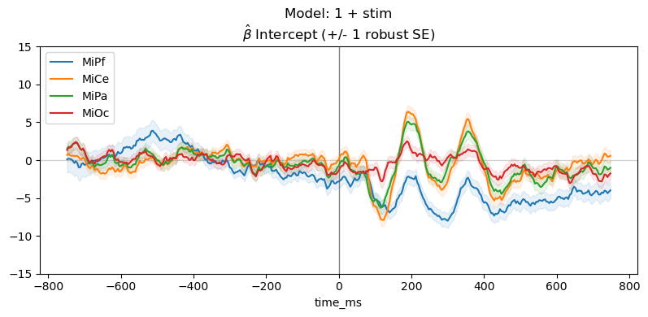
- 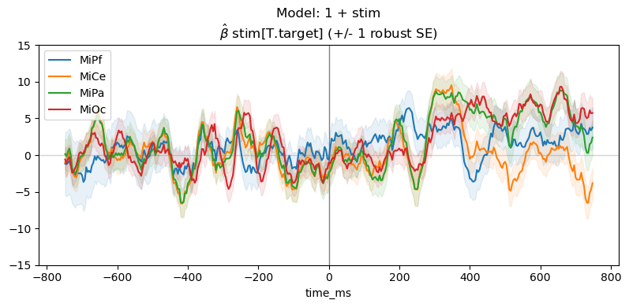
for param, vals in params_df.groupby("params"):
vals.reset_index('params', drop=True, inplace=True)
title_str = "Model: 1 + stim\n" + r"$\hat{\beta}$ " + f"{param}"
fig, ax = heatmap_plot(vals, title_str, vmin=-9, vmax=9)
- 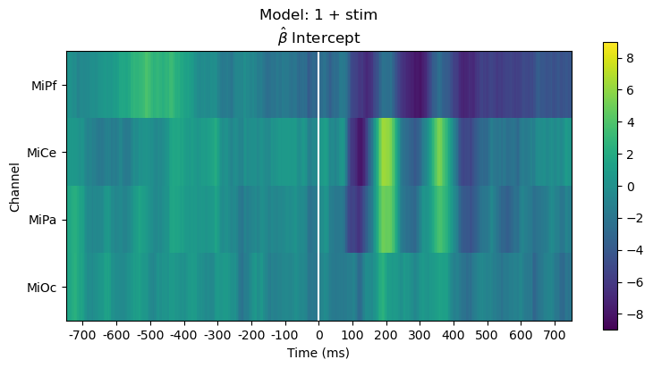
- 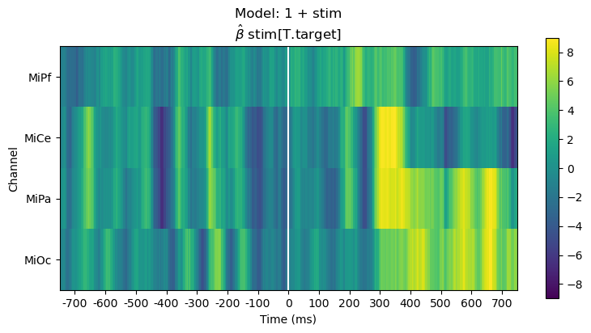
More examples
Query various fit measures and parameter estimates
ssr_lmg_1_stim = lmg_1_stim.ssr # residual sum of squares
llf_1_stim = lmg_1_stim.llf # log likelihood
aic_1_stim = lmg_1_stim.aic # Akiake Information Criterion
params_1_stim = (
lmg_1_stim.params
) # estimated parameters (a.k.a. weights, coefficients, betas)
tvals_1_stim = lmg_1_stim.tvalues # t-values
pvals_1_stim = lmg_1_stim.pvalues # p-values
bse_lmg_1_stim = lmg_1_stim.bse # param standard errors
rse_lmg_1_stim = (
lmg_1_stim.HC0_se
) # robust param standard errors (one version)
# set parameter pd.MultiIndex names for convenient slicing
for attr_df in [
params_1_stim,
tvals_1_stim,
pvals_1_stim,
bse_lmg_1_stim,
rse_lmg_1_stim,
]:
attr_df.index.set_names(["time_ms", "params"], inplace=True)
Drop the predictor variable and fit the intercept only model: \(\sim \mathsf{1}\)
For the intercept only model, \(\beta_0 \mathbf{1} + e\), the estimated intercept \(\hat\beta_{0}\) is average ERP for all trials, collapsed across the stimulus conditions.
lmg_1 = fg.lm(p3_epochs_fg, RHS="1", quiet=True)
params_1 = lmg_1.params
params_1.index.set_names(["time_ms", "params"], inplace=True)
ssr_lmg_1 = lmg_1.ssr
llf_1 = lmg_1.llf
aic_1 = lmg_1.aic
plot_chans = ["MiPf", "MiPa", "MiCe", "MiOc"]
colors = [
prop["color"] for prop in mpl.rc_params()["axes.prop_cycle"]
] # lookup colors
for param, vals in params_1[plot_chans].groupby("params"):
vals.reset_index('params', inplace=True)
times = vals.index.to_numpy()
_, ax = line_plot(
vals,
"Model: ~ 1 \n" + r"$\hat{\beta}$ " + f"{param} (+/- 1 robust SE)",
)
# add SE
for cdx, chan in enumerate(plot_chans):
color = colors[cdx]
se = rse_lmg_1_stim.query("params==@param")[chan]
ax.fill_between(
times, vals[chan] - se, vals[chan] + se, alpha=0.1, color=color
)
ax.axhline(0, color="lightgray", lw=1, zorder=0)
ax.axvline(0, color="gray", lw=1, zorder=1)
ax.set(ylim=(-15, 15))
ax.legend(loc="upper left")
Compare models full \(\sim 1 + stim\) vs. reduced \(\sim 1\)
Comparing log likelihood and AIC is useful for evaluating, diagnosing and interpreting model fit.
The full and reduced model likelihoods heatmaps are barely distinguishable. This is unsurprising since the stimulus variable accounts for only a small fraction of the overall variability in the EEG.
heatmap_plot(
lmg_1_stim.llf,
r"Log Likelihood Full Model$\mathsf{\sim 1 + stim}$",
vmin=-1800,
vmax=-1200,
)
heatmap_plot(
lmg_1.llf,
r"Log Likelihood Reduced Model$\mathsf{\sim 1}$",
vmin=-1800,
vmax=-1200,
)
- 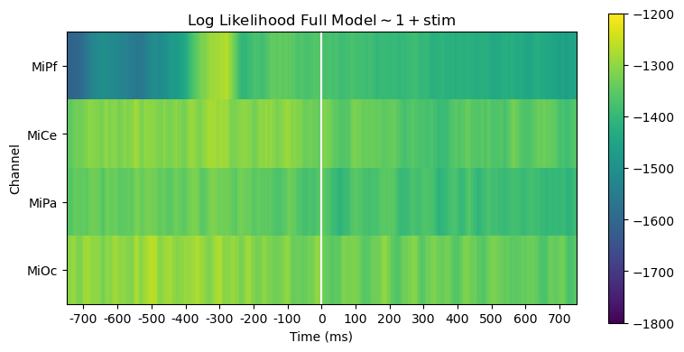
Out:
(<Figure size 800x400 with 2 Axes>, <AxesSubplot:title={'center':'Log Likelihood Reduced Model$\\mathsf{\\sim 1}$'}, xlabel='Time (ms)', ylabel='Channel'>)
However, the likelihood ratio (= difference of log likelihoods) shows that the stimulus predictor does account for variability in a way that generally aligns with the time course and channels of the post-stimulus positive stimulus effect.
title_str = r"Likelihood Ratio: Models $\frac{\mathsf{\sim 1 + stim}}{\mathsf{\sim 1}}$"
heatmap_plot(lmg_1_stim.llf - lmg_1.llf, title_str)
_, ax = line_plot(lmg_1_stim.llf - lmg_1.llf, title_str)
ax.set(ylabel="Likelihood Ratio")
- 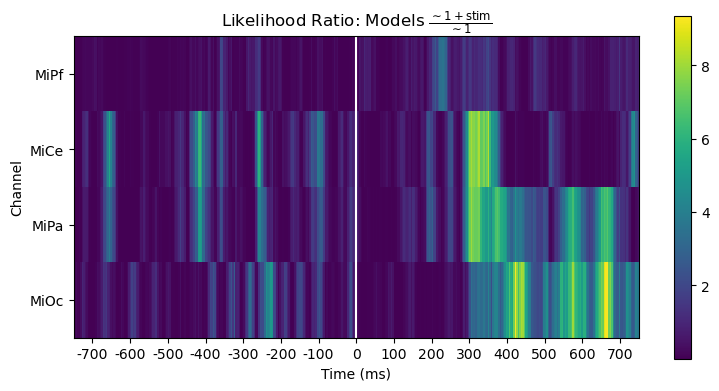
- 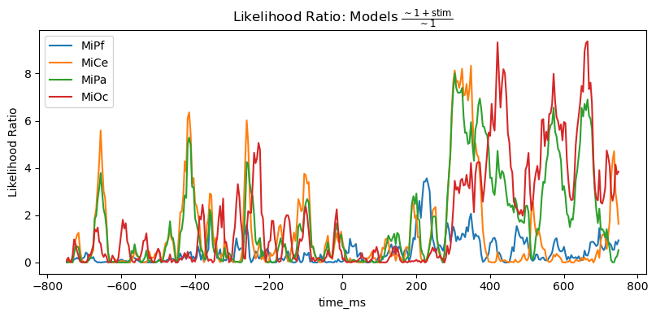
Out:
[Text(24.0, 0.5, 'Likelihood Ratio')]
For this pair-wise model comparison, AIC tells the same story as the likelihood ratio. AIC measures may also be used to compare and evaluate larger sets of models, not just pairs, e.g., [BurAnd2004].
title_str = (
r"AIC $\Delta = AIC_{\mathsf{\sim 1}} - AIC_{\mathsf{\sim 1 + stim}}$"
)
heatmap_plot(lmg_1.aic - lmg_1_stim.aic, title_str)
_, ax = line_plot(lmg_1.aic - lmg_1_stim.aic, title_str)
ax.set(ylabel=r"AIC $\Delta$")
yticks = [-2, 0, 2, 4, 7, 10]
ax.set_yticks(yticks)
ax.hlines(
yticks,
xmin=times[0],
xmax=times[-1],
color="lightgray",
lw=1.0,
ls="dotted",
)
- 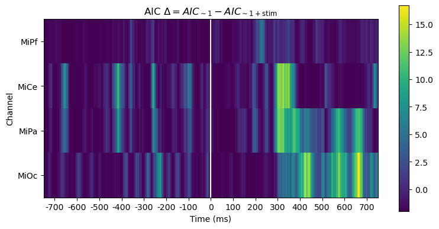
- 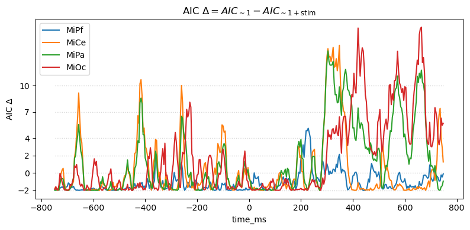
Out:
<matplotlib.collections.LineCollection object at 0x7f4bf4d7f2e0>
Time domain average ERPs: \(\mathsf{\sim 0 + stim}\)
Suppressing the model intercept triggers “dummy” (indicator) coded categorical predictor variables. For this model, \(\beta_0 X_0 + \beta_1 X_1 + e\), the estimated coefficients \(\hat\beta_{i}\) are the average of the trials in each condition, i.e., identical to the sum-and-divide time-domain average ERP.
lmg_0_stim = fg.lm(p3_epochs_fg, RHS="0 + stim", quiet=True)
print(type(lmg_0_stim))
params_0_stim = lmg_0_stim.params
rse_0_stim = lmg_0_stim.HC0_se
for attr_df in [params_0_stim, rse_0_stim]:
attr_df.index.set_names(["time_ms", "params"], inplace=True)
Out:
<class 'fitgrid.fitgrid.LMFitGrid'>
plot_chans = ["MiPf", "MiPa", "MiCe", "MiOc"]
colors = [
prop["color"] for prop in mpl.rc_params()["axes.prop_cycle"]
] # lookup colors
# rERPs = model parameter estimates over time
for param, vals in params_0_stim[plot_chans].groupby("params"):
vals.reset_index('params', inplace=True)
times = vals.index.to_numpy()
condition = param.replace("stim[", "").replace("]", "").upper()
_, ax = line_plot(
vals,
"Model: ~ 0 + stim\n"
+ r"OLS $\hat{\beta}$ "
+ f"{param} = average ERP ({condition})",
)
# add SE
for cdx, chan in enumerate(plot_chans):
color = colors[cdx]
se = rse_0_stim.query("params==@param")[chan]
ax.fill_between(
times, vals[chan] - se, vals[chan] + se, alpha=0.1, color=color
)
ax.axhline(0, color="lightgray", lw=1, zorder=0)
ax.axvline(0, color="gray", lw=1, zorder=1)
ax.set(ylim=(-15, 15))
ax.legend(loc="upper left")
- 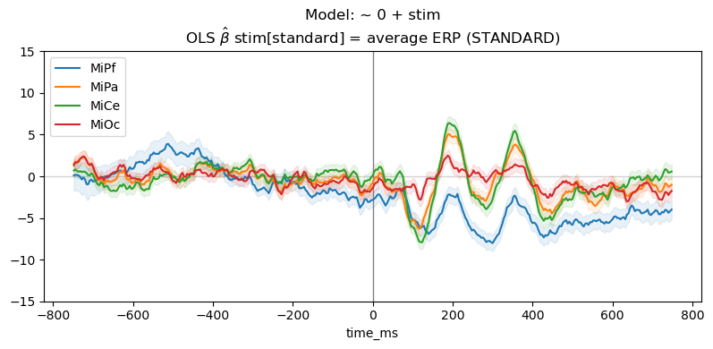
- 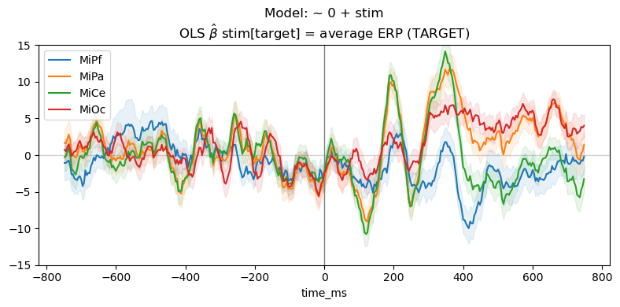
5. Next steps
Linear mixed-effects with lme4::lmer
Linear mixed-effects models can be fit to epochs data with
fitgrid.lmer and model formulas from the lme4::lmer R library.
The fitgrid is populated with the lmer fit results and sliced
and accessed the same way as the OLS grids. The mixed-effects fits
are much slower in general so parallel processing on multicore
hardware is likely a practical necessity.
lmeg = fg.lmer(
epochs_fg,
RHS="1 + a + (a | subid) + (a | itemid),
parallel=True,
n_cores=12
)
Multicore parallel acceleration
A good desktop workstation may have 8 cores, a high performance compute node may have dozens or more. With lmer modeling especially, it may be useful to take advantage of multiple cores and fit models with parallel processes to speed up processing though the performance impact depends on the system and size of the job and parallel jobs may run more slowly.
Run parallel processes by setting parallel to True and n_cores to the desired value (defaults to 4)
like so:
lmg = fg.lm(
epochs_fg,
RHS="1 + a + b + a:b",
parallel=True,
n_cores=6,
)
Note
When working on a shared system it is rude to hog too many cores.
Model sets and comparisons
To reduce memory demands when fitting and comparing sets of models,
fitgrid provides a convenience function fitgrid.utils.summarize
that iteratively fits a series of models and scrapes selected results
into lightweight summary data frame with key fit results for model
interpretation and comparison and a few helper functions for
plotting the summary results. See Model comparisons and summaries.
Model and data diagnostics
When the native Python and R fit results include diagnostic
information, this can be accessed in the fitgrid like any other
attributes. In practice, however, doing so may be intractably slow
or memory intensive. There are a few fitgrid convenience
utilities for diagnostics (see Model and data diagnostics (WIP)) though it is an area
that needs more work.
Total running time of the script: ( 0 minutes 36.633 seconds)